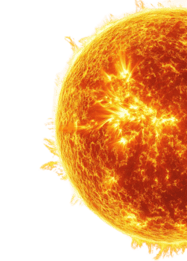
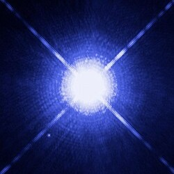
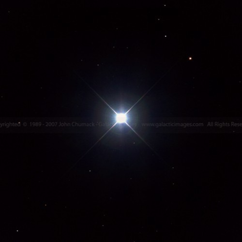
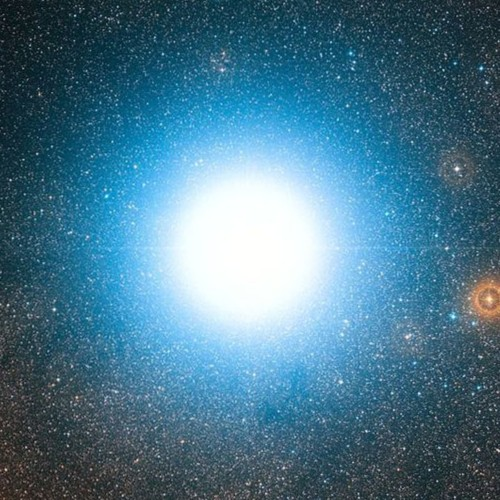
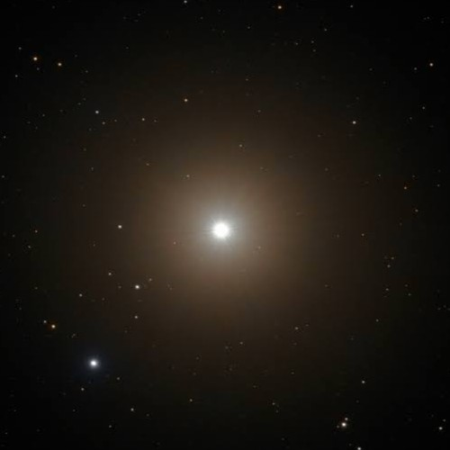
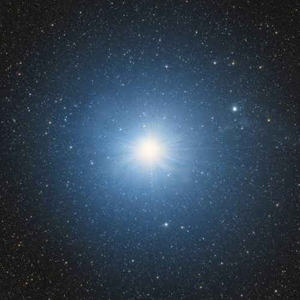
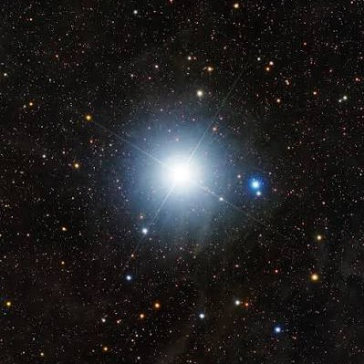

How do stars produce energy? We know that the sun
provides the Earth with the energy it needs to grow
plants and create heat, but where does this energy
come from? Inside the sun, there are actually a lot of
things going on. The sun itself is one large fusion
reactor, and it is able to create a giant, life-sustaining
amount of energy through nuclear fusion.
The sun is made of plasma (which can also be found
in our bloodstreams) and has many freely moving
electrons within it. These freely moving electrons can
create positively charged nuclei, which then collide
into one another. This produces energy through a
process know as nuclear fusion. Using Einstein's
famous equation, e = m * c ^ 2, we are able to see how
the sun converts tiny amounts of matter into energy
through a factor of the speed of light squared.


Throughout the years, people have looked to the skies for confort and guidence. In the night,
shining stars can be seen above, inspiring stories and aiding sailors. Constellations are the
combinations of these stars through lines, forming pictures of people or animals. Though these
images can sometimes be a bit of a stretch, they can still be seen throughout the world and
throughout the centuries. Some stars have even been able to help scientific claims, like in
estimating the size of the Earth using orbits or its position in the universe.
One of the most famous constellations is Orion, which originated from Greek myth.
According to the story, Orion was a famous hunter who bragged he could kill any animal
alive. The Earth goddess, Gaia, sent a scorpian to attack him, and Orion was killed.
However, the gods were saddened by Orion's death, so they placed him and the scorpian
in the sky to remember forever
Many of the constellation names we use originate from Greek, Roman, or Egyptian
stories, but the ancient Chinese and Inca civilizations used the four seasons to
group stars. They made images of animals from the different stars, which were typically
smaller (3 or so stars) than the ones we usually look for. Constellations come from
everywhere, and belong to the entire sky. Oftentimes they can look like different images
accross regions, and there can be many stories associated with the set of stars

Also known as Alpha Canis Majoris or the Dog Star, Sirius is the brightest star in our sky. Its name comes from the Greek word for "sparkling" or "scorching," possibly referring to its brightness and visibility. Sirius also has a companion star, Sirius B, that it orbits around, though this star is usually not visible to the naked eye.

Also known as Alpha Carinae, Canopus is the second brightest star in the night sky and is part of the constellation Carina. Canopus has been used in the past as a guide for navigation and attitude, even helping early estimates on the size of the Earth. According to legend, it was named for the navigator of King Menelaus during the Trojan War.

Also known as Rigil Kentaurus, Alpha Centauri is a system made up of three stars, one of which is the closest star to our sun. Alpha Centauri A is the third brightest star in the sky, Alpha Centauri B revolves around in an orbit of 80 years, and Proxima Centauri is so small that it is hard to see without special equipment.

Also known as Alpha Bootis, Arcturus is the fourth brightest star in the sky and part of the constellation Bootes. This orange colored star is named after Greek words for "bear guard," as it is located along the line of the tail of the constellation Ursa Major. Ursa Major is also known as the Great Bear, hence the name, "bear guard," and Arcturus is located around 36.7 light-years from Earth.

Also known as Alpha Lyrae, Vegais a part of the constellation Lyra and is the fifth brightest star in the sky. It is a white star, meaning that it is a higher temperature than our yellow sun, and Vega also has a ring of dust surrounding it that is roughly 100 billion miles long. Compared to other stars, Vega is very close to Earth, making it shine much brighter than other stars.

Also known as Alpha Ursae Minoris or the North Star, Polaris is located at the end of Ursa Minor. Although it is far from the brightest star in the sky, Polaris is still one of more well-known stars. This is because it is the current North Star, meaning that it is directly above the north pole and does not seem to rotate with the rest of the stars.
Like all other things in the universe, stars live and die. Unlike other things,
however, when they die, it is through a giant explosion known as a supernova. These can be
caused a few different ways, though stars can also die out through other methods. If a smaller
star (around the size of our sun) simply runs out of the fuel needs to keep burning, it will turn
into a white dwarf.
Supernovas are seen as the last act of a star, as going supernova marks the end of the
star's energy producing. The explosion releases an enormous amount of energy, launching radio
waves, X-rays, and cosmic rays out into space. Supernovae have two types, with the second
being more well-known. When a star's core becomes too heavy, its produced elements begin to
absorb rather than make energy. This causes the produced elements to build up and create a heavy
center in the middle of the star. Eventually, it becomes too heavy for the star to support, making it unable to resist its own gravity.
This causes the core to collapse in on itself. This collapse continues
until nuclei and electrons are crushed into one heavy object, known as a neutron star.
Neutron stars are unimaginabely dense, with a mass of 1.5 to 2 times the mass of our sun
packed into a 12 mile radius. When somethings hits this core, it generates a shock wave that is
strong enough to blow off the outer layers of the star, marking its death. The energy and light
produced from this process can be seen from light-years away, temporarily making it shine
brighter than all the other stars in the sky. If a type 2 supernova produces a core greater in
mass than 3 times out sun, it creates a black hole.